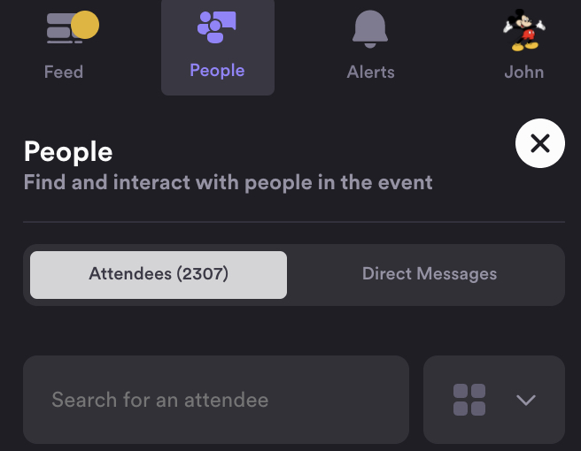

| It was a rough start but eventually everything settled down. I caught several very good presentations using a Chrome browser. To go Full Screen during the presentations, just click the little white square in the top right corner of the streaming video screen. In the Ham Radio 2.0 session, Eric Guth (4Z1UG), the QSOToday organizer, was the host. He profusely apologized for the hiccups and blamed himself for merging two emerging technologies (the Vfairs platform and Airmeet) for the Expo. Some of today’s sessions have been rescheduled for tomorrow, so check the schedule again in the morning. All recordings will be made available online for one month after the Expo ends. I caught 2307 attendees logged on at one point (see below). It might have been even higher during the day. I feel like I’m getting my $10 bucks worth of entertainment. If you’re on tomorrow, look for my Mickey Mouse meme in the attendee list. : >) 73, John, K6MM . 
|